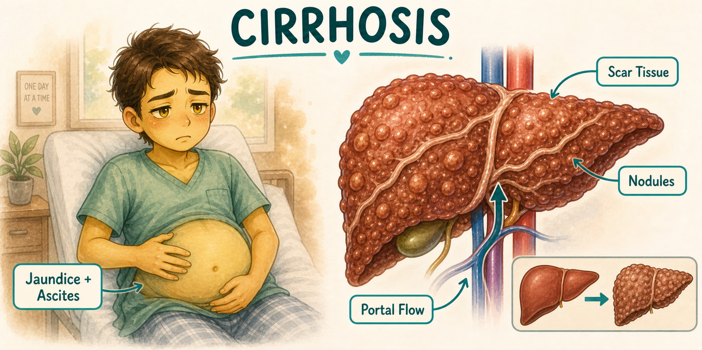
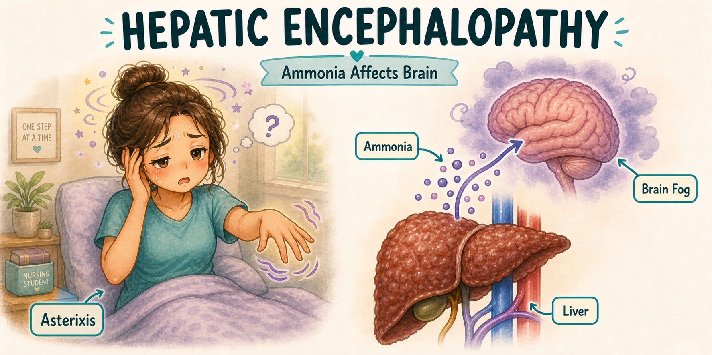
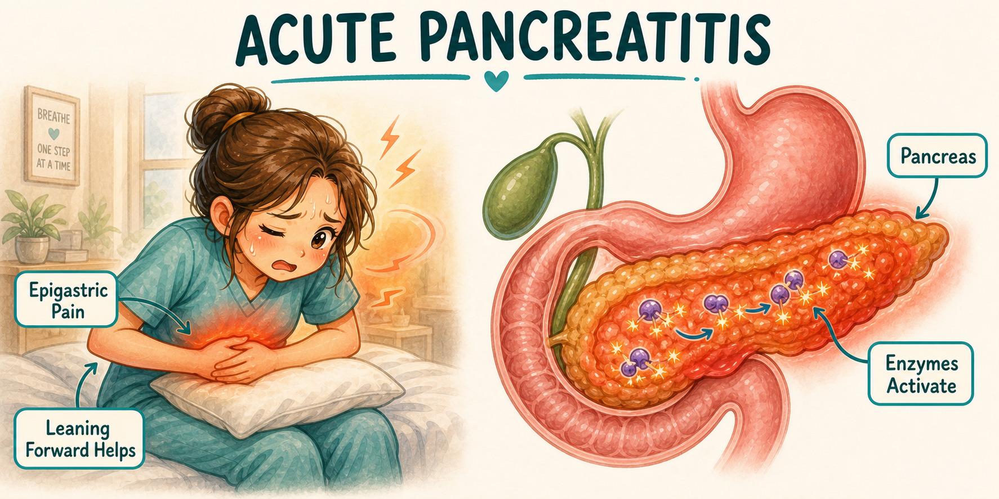
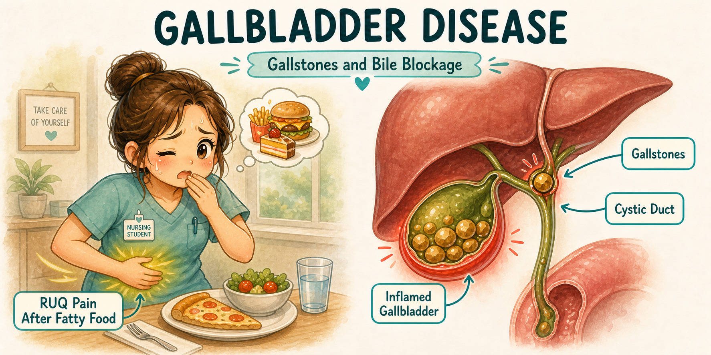

Adult Health Final GI
Liver, Pancreas, and Gallbladder Study Room
Watch the video here, jump by timestamp, then flip the matching liver, pancreas, and gallbladder cards without leaving the site.
Cirrhosis
Varices
Hepatic encephalopathy
Pancreatitis
Cholecystitis

Red danger / emergency
Green nursing action
Orange teaching / discharge
Purple exam trap / compare
Video 2
Jump to cards
Liver, Pancreas, Gallbladder Crash Course
Flashcards for this video
Open full Final GI deck
Liver + pancreas/gallbladder cards
GI My Notes
Use the review sheet beside this video.
This room covers the same liver, pancreas, and gallbladder lane as the packet: ascites, varices, hepatic encephalopathy, hepatitis, pancreatitis, cholecystitis, and post-op teaching.
Preview shows sample format, not the full packet. No actual exam or ATI questions. No score promises.






What should be reviewed next?
If a specific liver, pancreas, or gallbladder topic still feels fuzzy, send it in. Good requests can become a flashcard, video timestamp note, short post, or future review section.
Request a liver/pancreas topic